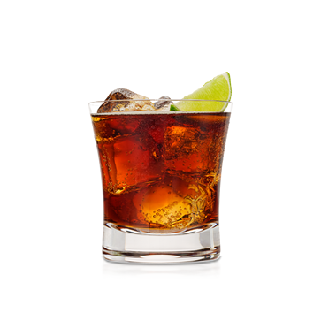

<!DOCTYPE html>
<html>
  <head>
  <title>Cuba Libre recipe - Zircle example</title>
  <meta name="viewport" content="width=device-width, initial-scale=1.0, maximum-scale=1.0, user-scalable=no" />
  <link href="https://maxcdn.bootstrapcdn.com/font-awesome/4.7.0/css/font-awesome.min.css" rel="stylesheet">
  <link href="https://fonts.googleapis.com/css?family=Source+Sans+Pro:400,700" rel="stylesheet">
  <script type="text/javascript" src="https://unpkg.com/vue"></script>
  <link href="dist/zircle.min.css" rel="stylesheet">
  <script type="text/javascript" src="dist/zircle.min.js"></script>
  </head>
  <body>
    <div id="app">
      <z-canvas>
      
        <z-view-manager :list='$options.components'></z-view-manager>
      
      </z-canvas>
    </div>
  </body>
  <script>
  const one = {
    name: 'one',
    template:
    `
    <z-panel view="one" >
      
      <section slot="circles">
        <z-scale 
          color="accent"
          :angle="-45"  
          size="large" 
          >
          <h1>Cuba Libre</h1>
        </z-scale>
        <z-scale 
          :angle="180"  
          size="medium" 
          gotoview="mix"
          >
          Mixing
        </z-scale>
        <z-scale 
          :angle="45"  
          size="small" 
          gotoview="recipe">
          
          3
          
          <div slot="label"> ingredients </div>
        </z-scale>
      </section>

    </z-panel>
   `
  }
  const recipe = {
    name: 'recipe',
    template:
    `
    <z-panel view="recipe">
      <section style="font-size: 20px;">
        <p>12 cl Cola</p>
        <p>5 cl Light rum</p>
        <p>1 cl Fresh lime juice</p>      
      </section>
    </z-panel>
   `
  }
  const mix = {
    name: 'mix',
    template:
    `
    <z-panel view="mix" >
        <section style="font-size: 20px;">
            Mix all ingredients in a glass filled with ice. Garnish with lime wedge.
        </section>
    </z-panel>
   `
  }
  new Vue({
      el: '#app',
      components: {
        one,
        recipe,
        mix
      },
      beforeMount () {
        this.$zircleStore.setView('one')
      }
    })
  </script>
</html>
